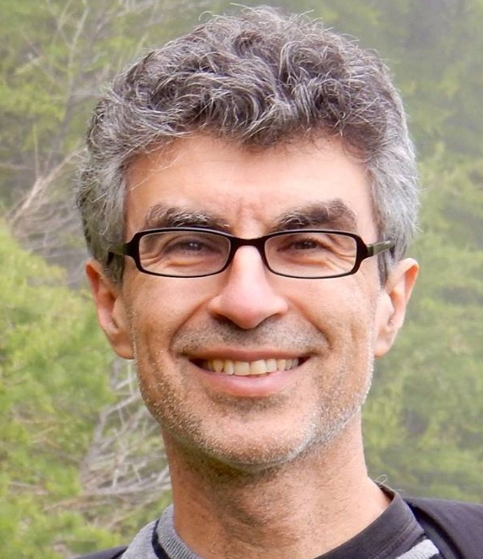
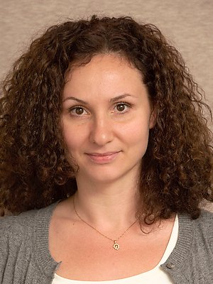

Invited Speakers
Yoshua Bengio

Meta-transfer learning for factorizing representations and knowledge for AI
Abstract: Whereas machine learning theory has focused on generalization to examples from the same distribution as the training data, better understanding of the transfer scenarios where the observed distribution changes often in the lifetime of the learning agent is important, both for robust deployment and to achieve a more powerful form of generalization which humans seem able to enjoy and which seem necessary for learning agents. Whereas most machine learning algorithms and architectures can be traced back to assumptions about the training distributions, we also need to explore assumptions about how the observed distribution changes. We propose that sparsity of change in distribution, when knowledge is represented appropriately, is a good assumption for this purpose, and we claim that if that assumption is verified and knowledge represented appropriately, it leads to fast adaptation to changes in distribution, and thus that the speed of adaptation to changes in distribution can be used as a meta-objective which can drive the discovery of knowledge representation compatible with that assumption. We illustrate these ideas in causal discovery: is some variable a direct cause of another? and how to map raw data to a representation space where different dimensions correspond to causal variables for which a clear causal relationship exists? What generative model of the data can be quickly adapted to interventions in the agent's environment? We propose a large research program in which this non-stationarity assumption and meta-transfer objective is combined with other closely related assumptions about the world embodied in a world model, such as the consciousness prior (the causal graph is captured by a sparse factor graph) and the assumption that the causal variables are often those agents can act upon (the independently controllable factors prior), both of which should be useful for agents which plan, imagine and try to find explanations for what they observe.
Bio: Yoshua Bengio is Full Professor in the computer science and operations research department at U. Montreal, scientific director of Mila and of IVADO, Turing Award 2018 recipient, Canada Research Chair in Statistical Learning Algorithms, as well as a Canada AI CIFAR Chair. He pioneered deep learning and has been getting the most citations per day in 2018 among all computer scientists, worldwide. He is officer of the Order of Canada, member of the Royal Society of Canada, was awarded the Marie-Victorin Prize and the Radio-Canada Scientist of the year in 2017, and he is a member of the NeurIPS board and co-founder and general chair for the ICLR conference, as well as program director of the CIFAR program on Learning in Machines and Brains. His goal is to contribute to uncover the principles giving rise to intelligence through learning, as well as favour the development of AI for the benefit of all.
Rose Yu
Deep Generative Model for Spatiotemporal Data
Abstract: Large-scale spatiotemporal data is abundant in many real-world applications, such as intelligent transportation, aerospace control, physical systems, and sports analytics. Spatiotemporal data presents unique challenges to generative modeling, such as spatial proximity, nonlinear dynamics, and multiresolution structures. For example, traffic patterns tend to be spatially coherent; basketball plays have short-term actions and long-term goals. In this talk, I will showcase how to design deep generative models to learn from complex spatial and temporal structures, especially for dealing with non-Euclidean geometry, long-term dependencies, and multiresolution structures. We demonstrate the successful application of these techniques to various domains including transportation and sports analytics.
Bio: Dr. Rose Yu is an Assistant Professor at Northeastern University Khoury College of Computer Sciences. Previously, she was a postdoctoral researcher in the Department of Computing and Mathematical Sciences at Caltech. She earned her Ph.D. in Computer Science at the University of Southern California and was a visiting researcher at Stanford University. Her research focuses on machine learning for large-scale spatiotemporal data and its applications, especially in the emerging field of computational sustainability. She has over a dozen publications in leading machine learning and data mining conference and several patents. She is the recipient of the USC Best Dissertation Award, "MIT Rising Stars in EECS", and the Annenberg fellowship.
Yulia Tsvetkov

Continuous-Output Language Generation
Abstract: The softmax layer is used as the output layer of nearly all existing models for language generation. However, softmax is the computational bottleneck of these systems: it is the slowest layer to compute, and it has a huge memory footprint; to reduce time- and memory-complexity, many language generation systems limit their output vocabulary to a few tens of thousands of most frequent words, sacrificing the linguistic diversity and completeness of outputs. Finally, generating language using generative adversarial networks (GANs) is a notoriously hard task specifically due to the softmax layer. In this talk I'll introduce continuous-output generation—a general modification to the seq2seq models for generating text sequences which does away with the softmax layer, replacing it by the embedding layer. I will also describe ongoing work which explores alternative losses for continuous-output generation, approaches to efficient decoding, and continuous-output GANs for text.
Bio: Yulia Tsvetkov is an assistant professor in the Language Technologies Institute at Carnegie Mellon University. Her research interests lie at or near the intersection of natural language processing, machine learning, linguistics, and social science. Her current research projects focus on language generation, multilinguality, automated negotiation, and NLP for social good. Prior to joining LTI, Yulia was a postdoc in the department of Computer Science at Stanford University; she received her PhD from Carnegie Mellon University.
Graham Neubig
Learning about Language with Normalizing Flows
Abstract: Human language is complex and highly structured, with the unique syntax of each language defining this structure. While analyzing this structure and using it to train better NLP models is of inherent interest to linguists and NLP practitioners, for most languages in the world there is a paucity of labeled data. In this talk, I will discuss unsupervised and semi-supervised methods for learning about this structure and the correspondence between languages, specifically take advantage of a powerful tool called normalizing flows to build generative models over complex underlying structures. First, I will give a brief overview of normalizing flows, using an example from our recent work that uses these techniques to learn bilingual word embeddings. Then, I will demonstrate how these can be applied to un- or semi-supervised learning of linguistic structure with structured priors for part-of-speech tagging or dependency parsing.
Bio: Graham Neubig is an assistant professor at the Language Technologies Institute of Carnegie Mellon University. His work focuses on natural language processing, specifically multi-lingual models that work in many different languages, and natural language interfaces that allow humans to communicate with computers in their own language. Much of this work relies on machine learning to create these systems from data, and he is also active in developing methods and algorithms for machine learning over natural language data. He publishes regularly in the top venues in natural language processing, machine learning, and speech, and his work occasionally wins awards such as best papers at EMNLP, EACL, and WNMT. He is also active in developing open-source software, and is the main developer of the DyNet neural network toolkit.
Aaron van den Oord

Latent-Space Generative Models
Abstract: Deep generative models have significantly improved in the past few years, however, there are still many open questions when it comes to modeling high-dimensional data. Generative models need to capture non-linear long-range dependencies on multiple timescales to get globally coherent samples of audio, images, text and video. A lot of progress has been made by simply using larger models and more computation, where architectural novelty could be more efficient. Finally, using generative models in downstream tasks rather than generating samples is still in its infancy. We argue for hierarchical generative models that capture the data distribution in a compressed latent space rather than the pixel space. We show that combining autoregressive modeling with hierarchical discrete latent spaces dramatically improves quality, diversity and long-range consistency in samples. In similar vein we present Contrastive Predictive Coding, which uses a contrastive loss to model abstract latent representations and achieve state of the art results on unsupervised learning benchmarks.
Bio: Aaron van den Oord is a research scientist at Google DeepMind. He received his PhD degree from Ghent University in 2015. His research interests include generative modeling, autoregressive networks, unsupervised representation learning, self-supervised learning and various applications of generative models such as text-to-speech synthesis and data compression.